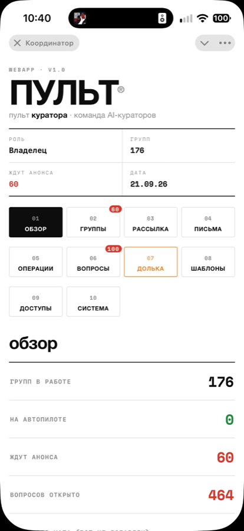
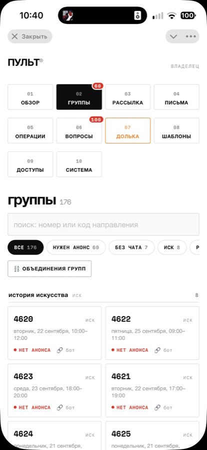
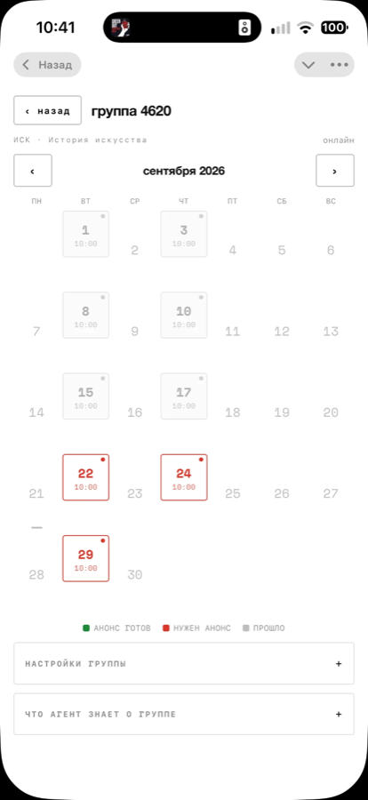
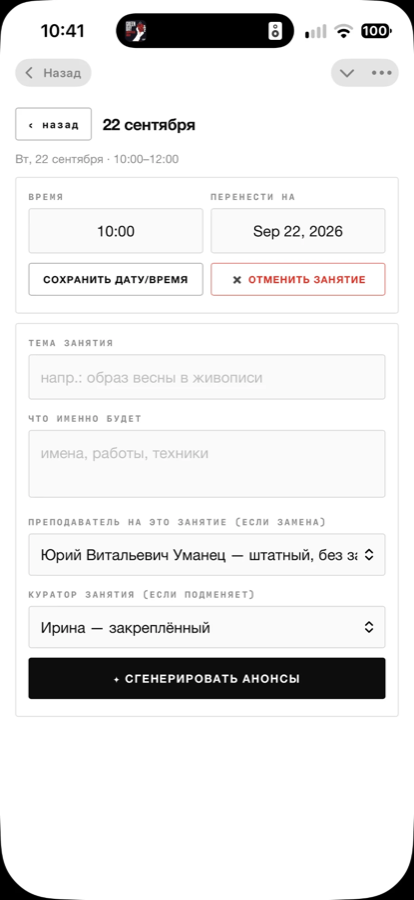
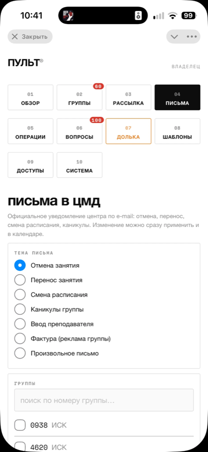
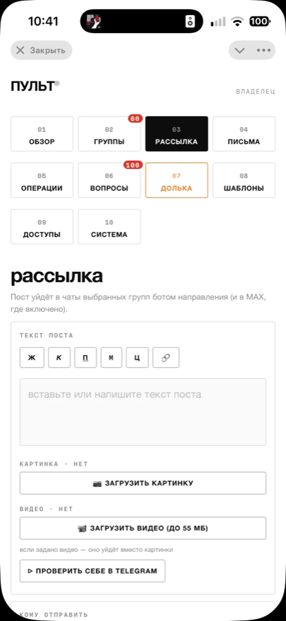

Анонсы к каждому занятию, ответы участникам за секунды, письма в ЦМД за минуту и личный кабинет участника. Всё это уже работает — прямо сейчас, на 176 группах Академии Наталии Эдис.
Показать вживую — 20 минут Сравнить с живым кураторомКаждый пункт — не план, а работающая функция. Всё покажу на живом проекте.
За сутки, за час, в начале и после занятия. Тексты в вашем стиле, с картинками, с темой и номером группы. 60 анонсов в очереди — одна кнопка.
«Где занятие», «как подключиться», «когда запись» — куратор направления отвечает за секунды, бесконечно терпеливо, в вашем тоне.
Отмена, перенос, смена расписания, каникулы, ввод преподавателя. Система готовит официальное уведомление и правит календарь — отправляет всегда человек.
Пост уходит ботами направлений в выбранные группы — Telegram и MAX. С картинкой или видео, с предпросмотром себе перед отправкой.
Режим тишины во время занятий, вежливые ответы на типовые вопросы, а сложные случаи — сразу живому куратору с уведомлением.
Участник видит свои группы, ссылки и расписание — и одной кнопкой добавляет занятия в календарь телефона. Работает на iPhone и Android, даже офлайн.
Приходит на занятие с презентацией и живым голосом, ведёт по сценарию, здоровается с участниками. Хотите познакомиться — приведу её на нашу встречу, поговорите с ней сами.
Всё управление — в телефоне владельца: каждый шаг системы видно, любой можно отменить. Роль «Владелец» — у вас.






Честное сравнение — без магии. Сильные стороны есть у обоих.
Система не заменяет людей — она забирает рутину. Старшие кураторы остаются: они контролируют систему и ведут сложные случаи. Просто их нужно меньше, а работают они спокойнее.
Эти вопросы мне задаёт каждый поставщик. Отвечаю прямо.
Первое время система работает в режиме проверки: каждый анонс публикуется только после утверждения человеком. На «автопилот» группы переводите вы сами — по одной, когда убедитесь. Ошибка правится за минуты и больше не повторяется: система запоминает правила каждой группы.
С центром «Московского долголетия» общается только человек. Система лишь готовит черновики официальных писем — отмена, перенос, каникулы — и экономит час работы на каждом. В чаты уходят только анонсы и ответы по вашим правилам, каждый шаг записан.
Данные участников хранятся на серверах в России. С сообщениями работают российские нейросети; к зарубежным уходит только обезличенный текст — имена, телефоны и контакты автоматически заменяются кодами. Каждое обращение фиксируется в журнале аудита.
Пульт устроен как обычное телефонное приложение — ваши сотрудники открывают его в Telegram, без установки программ. Внедряю сам, обучаю команду лично и остаюсь на связи: два месяца сопровождения включены.
Начинаем с нескольких групп параллельно с живыми кураторами — ничего не ломаем и не отключаем. Автообзвон у вас уже работает и нравится команде — это та же система, тот же разработчик, тот же уровень надёжности.
Решаете вы. Кто-то переводит лучших на контроль системы и работу с людьми, остальным отдаёт рутину машине. Система подстраивается под вашу структуру, а не наоборот — я леплю её под конкретного поставщика.
Штатный куратор — это зарплата плюс около 43 % страховых взносов сверху. В Академии поддержку участников вели 15 кураторов — теперь спокойно справляются 4. Только на страховых взносах экономия доходит до миллиона рублей — не считая зарплат. А наполняемость групп растёт: анонсы и напоминания выходят к каждому занятию без исключений.
Спокойно и без остановки вашей работы.
Смотрим ваши направления, группы и чаты. Считаем выгоду именно для вашей организации.
Подключаем несколько групп параллельно с живыми кураторами. Всё в режиме проверки человеком.
Переводим направления в работу. Настраиваю тексты и правила под ваш стиль.
Обучаю команду, отдаю пульт владельцу. Два месяца сопровождения включены.
176 групп, 11 направлений «Московского долголетия». Команда ИИ-кураторов ведёт анонсы и чаты, Долька выходит в Zoom, участники — в личных кабинетах.
Автообзвон приглашает участников на занятия и напоминает о них. Сотрудники довольны — это первый шаг той же экосистемы.
Подключу вас к демо-чату, познакомлю с Долькой и посчитаю выгоду для вашей организации. Без обязательств.
Написать Ивану — @apilsen